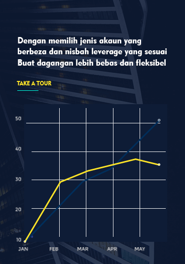

Masuk


Malaysia
Home > The news bulletin > text
Abstract:
The dollar fell sharply on Thursday as dovishness about the fed's interest-rate decision drove the dollar index to a five-session low, breaking 97 points. Non-us currencies and commodities such as gold and crude oil benefited and rose sharply. Spot gold hit $1,394.11 an ounce, its highest since August 30, 2013. The fed's decision to keep interest rates unchanged at 2.25%-2.5%, a statement that lowered its assessment of the economy's balance, and a shift in the grid, suggest a rate cut at some point in the future is appropriate. Fed funds futures point to an increased chance that the federal reserve will cut interest rates in July. Expectations of a rate cut sent the dollar tumbling and non-u.s. gold prices up. In more concrete news, the bank of Japan on Thursday left monetary policy unchanged after the federal reserve signaled it was willing to cut interest rates amid growing threats to growth. 'the central bank left interest rates and asset purchases unchanged and all 50 economists surveyed expected no change,' the statement said. Rba chairman Stephen lowy said the possibility of a rate cut was still being discussed and it was "unrealistic" to expect a further cut in cash rates and to think a quarter-point cut would alter the path of economic growth. The speech on the Australian dollar to form a certain support, the Australian dollar took advantage of the rebound. The battle for the British prime minister: Johnson leads three times in a row, boosting his chances; The pound continued to rebound as the domestic situation stabilised. As the dust settles on the fed's June rate decision, the focus turns to the bank of England's decision and minutes at 19:00 Beijing time.
Today's breed analysis
Technical surface, the line closed yesterday positive line, days strong rise, the current test 1.1300 line resistance. There are signs of renewed strength on the line, you can focus on the opportunity to step back to do more. Brin opened his mouth and returned to the position of the middle track. In the attached figure, KD index enters the overbought region and forms a dead cross. Focus on the downside. MACD double line out of the long kinetic energy column area, the zero axis above the formation of a fork down. On the whole, the structure of the day line recovery, pay attention to the breakthrough of key points. 4 hours chart, the bottom deviation after the recovery, the short - term upward trend is strong. Brin belt opening, after breaking on the track upward, strong trend. In the attached figure, KD forms a gold fork after entering the oversold area, and we should pay attention to its upward strength. MACD double line gold fork after the glue again, short line may have rebound opportunities. Overall, the probability of stabilization recovery is relatively large, focus on 1.1260 long, stop 1.1230, target 1.1320.
Euro/dollar 4-hour chart
Gold has
Day line close line, day strong pull up test 1394 after falling back, short - term trend is strong. Day line strong long, can focus on the callback to do more opportunities, day support concerns 1377 a line. The belt opens up and falls back after the day's test. In the attached figure, KD enters into the overbought area, and the high position forms a dead fork with certain downward force. MACD double line under the zero axis to form a gold fork, long column of kinetic energy weakened. The trend of the day is still more than shock, days can focus on the callback to do more opportunities, can focus on the long and short dividing line 1356 line support. From the level of 4 hours, the low point was supported near the rising trend line and rose strongly. After testing 1393, it fell back. The 4-hour strong was much shorter and the rapid rise should not be followed by blind heavy warehouse. The belt opens up and the space opens up. In the attached figure, KD is adjusted to the top of 20 to form a gold fork again, with strong upward movement. The MACD double line is adjusted to a lower position to form a gold fork, but the kinetic energy column is weakened. Overall, the gold line trend is more, short line adjustment in place after continue to do more, namely 1375 do more, stop 1372, target 1386.
Spot gold 4-hour chart
Crude oil in
Day line yesterday close dayang line, days before the continuation of the strong, above the 60 average resistance level. Daily line closing price broke 20 moving average, the line has many signs of turning. After breaking through the middle rail, it is expected to test the pressure level of the upper rail. In the attached figure, KD index is adjusted into oversold area to form gold fork upward. MACD double out of short momentum column low form gold fork, rebound strength. In general, the oil line has stabilized signs of rising, day - long attention to low opportunities. 4 hours class, strong rise over the shock interval along, if you can effectively break on the track, up space is expected to open. Brin belt opening up slightly, short - term trend stronger. In the attached figure, KD is adjusted to around 30 to form a gold fork upward again, with a strong overall trend. MACD double line low form gold fork, upward kinetic energy is strong. Overall, the oil tank bottom shock, can focus on the low many opportunities, namely 54.9 long, stop 54.6, target 56.
Crude oil 4-hour chart
Key data focus:
① 19:00 bank of England interest rate resolution, meeting minutes ② 20:30 initial jobless claims in the week ended June 15 ③ 20:30 U.S. current account for the first quarter and Philadelphia fed manufacturing index for June ④ 22:00 the monthly rate of the conference board leading index for may ⑤ 22:30 U.S. EIA natural gas inventories for the week ending June 14 ⑥ July New York crude oil futures closed at 02:30 the next day ⑦ Bank of England governor jay carney speaks at 04:00 the next day
Note: this paper is only a prediction of the market, not as a practical advice!